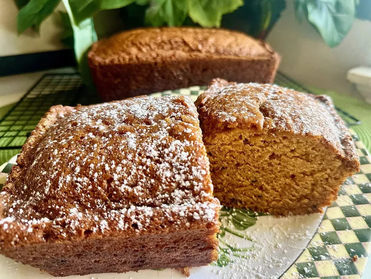

Pumpkin Bread

Description
Got this recipe for pumpkin bread made with fresh pumpkin from my mom. This easy, quick bread recipe with walnuts (or raisins!)
comes together in just minutes with either boiled, steamed, or roasted fresh pumpkin. If you don't have cooked pumpkin, just use canned instead.
Ingredients
Base
-
3 ¼ cups all-purpose flour
-
3 cups white sugar
-
2 teaspoons baking soda
-
1 ½ teaspoons salt
-
1 teaspoon ground nutmeg
-
1 teaspoon ground cinnamon
-
2 cups mashed fresh pumpkin (from boiled or roasted pumpkin)
-
1 cup vegetable oil
-
⅔ cup water
-
4 large eggs
-
½ cup chopped walnuts (Optional)
Steps
-
Preheat the oven to 350 degrees F (175 degrees C). Grease and flour three 7x3-inch loaf pans.
-
Stir flour, sugar, baking soda, salt, nutmeg, and cinnamon together in a large mixing bowl until well blended. Add mashed pumpkin, oil, water, and eggs;
beat with an electric mixer until well combined. Fold in walnuts. Divide batter evenly among the prepared pans.
-
Bake in the preheated oven until a toothpick inserted in the center of each loaf comes out clean, about 1 hour.
-
Remove from the oven and set pans on a wire rack. Let cool completely before slicing.
Cooks Notes!
You can use pumpkin purée instead of cooked fresh pumpkin and raisins instead of walnuts if desired.